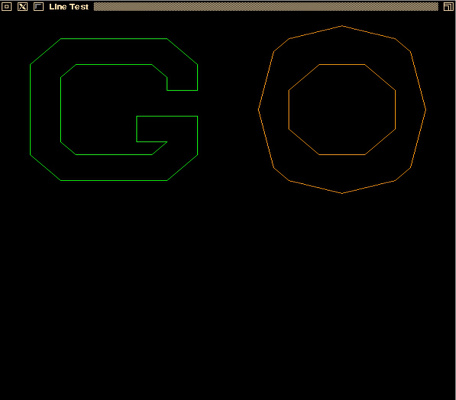
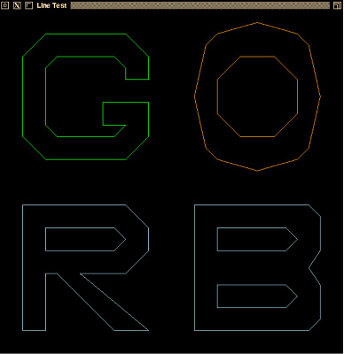

In this course, you will implement some of the 2D drawing routines we have been discussing in class. This will help improve your understanding of these algorithms. This assignment involves line drawing. You will implement the Midpoint Line Drawing algorithm discussed in class. You have the option of doing this assignment in C, C++, or Python.
The programming environment that you will use for this assignment (along with the remainder of the 2D assignments) is a set of simple modules with implementations in C, C++, and Python. These modules are designed as object-oriented classes in the C++, and Python versions, and as equivalent non-OO versions in C. You are free to use any of the implementations. The classes include:
The C/C++ systems use an OpenGL based framework under the hood. For the 2D assignments, you will not need to be concerned with the details of this basic framework implementation, except to the extent that you'll need to assure that OpenGL is working properly on your development system. You will also see extra files in the C/C++ folders to support this framework that are not found in the Python folders. A working OpenGL can confirmed by completing Assignment 0 - Hello Open GL, which should be done prior to starting this assignment.
The Python version of the 2D framework uses python 2.7 and relies on the Matplotlib and Numpy libraries under the hood. You will need to download and install these packages and necessary dependencies. For Windows, you can use http://www.lfd.uci.edu/~gohlke/pythonlibs/ to download the required libraries. For Mac users you may chose http://penandpants.com/2013/04/04/install-scientific-python-on-mac-os-x/ by using Homebrew.
You will need to modify the Rasterizer module. For this assignment, you will need to complete the method drawLine(), implementing the Midpoint Line Drawing algorithm and the method myInitials() to draw your initials (see below). In your implementation, you need only make use of the method setPixel() on the simpleCanvas object passed in as a parameter in order to manipulate the pixels on the canvas. The prototype for the drawLine() method varies a bit between languages:
In all cases, the line is drawn from vertex (x0,y0) to vertex (x1,y1). The additional parameter in the C version is due to the fact that C is not an object-oriented language. In C++ and Python, the drawLine() method is part of the Rasterizer class, and is invoked in the standard way:
Rasterizer R; R.drawLine( ... );
In C, because drawLine() is a standalone function, the Rasterizer it is being applied to must be supplied as a parameter. You are free to add additional members and methods to Rasterizer as you see fit; however, you cannot modify the simpleCanvas module.
In addition to implementing the drawLine() method, you must modify the myInitials() method (in Rasterizer) to add your own first and last initials to the image, drawing these letters in blue. You are free to use any style you wish for these letters; the only constraint is that they should be drawn as a series of line segments (as the existing letters are drawn).
The slides for the midpoint line algorithm covered the case where the line segment had a small positive slope (0 < m < 1); your implementation must also handle the other three cases (large positive slope, small negative slope, and large negative slope). Also, remember that we assumed that the line was being drawn from left to right (i.e., thatx0 was less than x1); you are not guaranteed that this will be the case, so you'll need to remember to check the incoming coordinates and swap the vertices if necessary.
Figure 1 below shows the solution for the letters 'G' and 'O' (these coordinates are provided for you). Figure 2 shows the complete solution for a student with the initials 'RB', drawn using the same style as original.

Figure 1.

Figure 2.
The programming framework for this assignment is available as the ZIP archive, lab1.zip. It can be found in the Assignment materials folder of CONTENT or by clicking here.
The ZIP archive contains a folder named lab1; under that are subfolders c, c++, and python, which contain the files for each respective platform. In the C and C++ folders you'll find a file named header.mak, for use on the CS systems to help you generate a Makefile that will compile and link your program with the libraries used by the framework. See the contents of header.mak for details on how to do this.
There is also a subfolder named misc which contains a shellscript named compmac for use on Mac systems.
There will be two separate submissions for this lab. The first will assure that you have a working programming environment for future 2D assignments, This submission will be made to the dropbox name Assignment 0 - Programming Environment setup. If you are doing the assignment in C/C++, you should complete Assignment 0 - Hello OpenGL (C/C++ version) and submit the results of that assignment to the Assignment 0 dropbox. If you are doing the assignment in Python, please run the python code (without modifications) which should result in a window filled with a back box. Please take a screen shot of that window and submit it to the Assignment 0 dropbox,
The second submission will contain your implementation of the drawLine() and myInitials()and should be made to the dropbox Assignemnt 1 - Line Drawing.
Your implementations will be tested using a set of driver programs; some of them may be different from the driver found in the framework archive. Submit only your modified
Rasterizer - do not submit any other source code.
If you are working in C++, your implementation must be in a file named Rasterizer.cpp. If your implementation requires making changes to the Rasterizer.h file (e.g., you have added data members or member functions to the class declaration), you should submit that file along
with Rasterizer.cpp. If you make changes to the header.mak file, you may submit your modified file as well.
Similarly, if you are working in C, your implementation must be in a file named Rasterizer.c. Again, if your implementation requires making changes to the Rasterizer.h file, you should submit that file along with Rasterizer.c. If you make changes to the header.mak file, you may submit your modified file as well.
For Python, you should submit your modified Rasterization.py file.
The minimum acceptance test is that your code must be complete - that is, it must compile and link cleanly when submitted. Submissions will not be accepted if they fail to compile and link cleanly. (Warning messages from the compiler are acceptable, but not fatal errors.)
Your grade will be based on your implementation of the required routines and its usability with the supplied test programs.
The lists of situations to be checked in your submission (see below) is not exhaustive; the tests run during grading may include other combinations. You may want to modify the test program you are given to cover a wide range of input situations.
Turn in only your C, C++, or Python implementation file(s) described above and an optional README file in Dropbox submission.
Grading will be done on a 50 point scale:
DrawLine Implementation (40 points)
myInitials Implemenation (letters are clearly drawn) (5 points)
Other Considerations, e.g. documentation / commenting (5 points)
You are guaranteed that the dimensions of the drawing window will be 600x600 pixels.
The vertices given to drawLine() may occur in any order - that is, there is no guarantee that (x0,y0) is the leftmost vertex of the line segment.
It is common knowledge that the code for the Midpoint algorithm is freely available on the Internet and in textbooks. You are free to use these references as a guide, but please do not simply cut and paste code from any of these sources.Don't wait until the last minute to submit things! You may, in fact, want to submit even a partially- working solution as you work on it - there is no penalty for making multiple submissions, and this will help ensure that you get something submitted for this assignment.
Do not make any changes to the function prototypes. This means that your implementations must match the prototypes exactly in terms of number, types, and order of parameters. The reason for this is that the test programs assume that your implementations match those prototypes; if you make changes, there will be compilation errors, and even if the test programs link, they almost certainly won't execute correctly (which means you'll lose substantial amounts of credit for incorrect program performance).